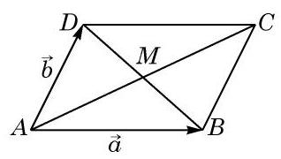
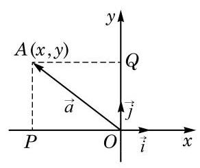
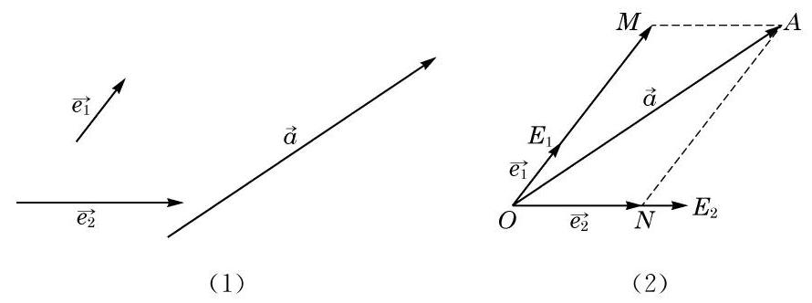
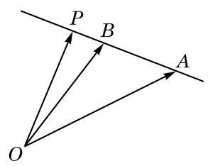
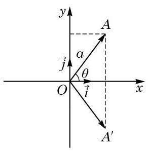
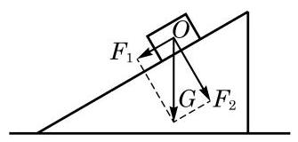
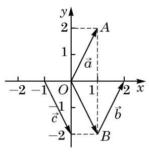
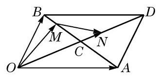

例题 1
例 1 如图 8-3-3, 在平行四边形 ABCD 中, 两条对角线的交点是 ,设 . 试用 的线性组合分别表示 与 .

图 8-3-3
学生阅读版 / 沪教版高中数学
必修第二册
第8章平面向量 · 保留教材主线与原题
教材与正式教参整合
我们知道平面上的向量是该平面上一个有大小和方向的量, 我们还知道在平面上可以建立直角坐标系. 能否利用平面直角坐标系来研究平面上的向量呢? 取定一个平面直角坐标系, 就可以把平面上的点与有序实数对 (点的坐标) 一一对应. 如果把向量的起点都放在坐标原点上, 那么向量的终点的坐标就完全把这个向量确定了. 这样, 平面上的点与有序实数对的一一对应就可以转化为平面上的向量与有序实数对的一一对应. 这样的对应就是本节要讨论的向量的坐标表示. 形式地定义这样的表示并不难, 重要的是如何以这样的表示为工具, 进一步讨论向量的性质和运算, 使我们对向量的相关认识得到升华.
上面我们谈到了通过平面直角坐标系, 可以把平面上的向量和有序实数对一一对应起来. 下面我们要用向量的语言建立和表述这个一一对应.

图 8-3-1
如图 8-3-1,把向量 的起点放在坐标原点 上,设其终点是 . 如前所述,就可以把向量 与一个有序实数对 相对应. 这个实数对对于向量 的实际意义是什么呢?
设 与 分别是 轴与 轴正方向上的单位向量,把向量 在 与 的方向上作投影 与 . 其中, 与 分别是点 在 轴与 轴上的投影. 显然 , ,而且 是一个矩形, 是对角线. 于是我们把 表示成了向量 与 的线性组合:
这就是上面所述的向量 与有序实数对 相对应的实际意义.
从这里可以看到另一个事实: 给定上面所说的两个向量 与 ,平面上的任意一个给定的向量 都可以写成 与 的一个线性组合. 我们可以更一般地考虑: 如果把 与 换成其他两个非零向量 与 ，那么平面上任意给定的一个向量是否都是 与 的线性组合呢?
如果 ,那么结论显然不成立,因为这时 与 的任意一个线性组合 ( 与 是实数)都是与 和 平行的向量, 所以不可能表示平面上的所有向量. 然而, 除了这个例外, 与 的线性组合确实可以把平面上任意一个向量表示出来. 更准确地说,我们有如下定理:
向量基本定理 如果 与 是平面上两个不平行的向量,那么该平面上的任意向量 ,都可唯一地表示为 与 的线性组合,即存在唯一的一对实数 与 ,使得
证明 本证明是前面关于把 写成 的证明的推广. 不过,由于所给的 与 不一定互相垂直,因此必须用构建平行四边形的方法来代替做投影.

图 8-3-2
给定不平行的两个向量 和任意一个向量 ,如图 8-3-2(1)所示. 从任意给定的一点 出发，作向量 ， ，如图 8-3-2(2)所示. 过点 作平行于直线 的直线,交直线 于点 ,并作平行于直线 的直线,交直线 于点 ,则 是平行四边形, 是其对角线,从而 . 由于 ,因此存在实数 使 ；同理，存在实数 使 . 于是，
下面再证明这个实数对是唯一的. 假设还成立 ,就有
由于 与 不平行,因此 ,即 .
给定平面上的一组向量, 如果平面上的任意向量都可以唯一地表示成这组向量的线性组合, 那么就称这组向量是平面向量的一个基. 用这个术语, 向量基本定理可以表述成: 平面上任意两个不平行的向量都组成平面向量的一个基.
例 1 如图 8-3-3, 在平行四边形 ABCD 中, 两条对角线的交点是 ,设 . 试用 的线性组合分别表示 与 .

图 8-3-3

图 8-3-4
(1)如图 8-3-4，给定平面上不共线的三个点 、 与 ，根据向量基本定理,对平面上任意一点 ,都有实数 与 ,使得
(2)证明 三点共线的充要条件是 ；
(3)由此推出，对直线 上任意一点 ，一定存在唯一的实数 ,使下列向量等式

(第 1 题)
物理中常常将力进行正交分解, 就是向量正交分解的一个常见的应用. 如图 8-3-5, 将斜面上物体的重力分解为沿斜面的下滑力和垂直于斜面的正压力.

图 8-3-5
例 2 如图 8-3-6,写出向量 、 与 的坐标.

图 8-3-6
有了向量的坐标表示后, 向量的运算可以转化为其坐标的相应运算.
设 与 均是坐标表示的向量, 是一个实数, 则
这就是说: 向量相加 (减), 可化为把它们的对应坐标相加 (减); 一个向量乘一个实数, 可化为把它的坐标乘这个实数.
这些公式的证明是容易的:
因为 ,所以
对 ,有
例 3 给定向量 与 ，求向量 的坐标.
例 4 平面上 三点的坐标分别为 、 ,写出向量 的坐标.
例 5 已知平面上两点 、 的坐标分别为 、 ,求 的单位向量 的坐标.
给定两个坐标表示的向量 与 ,它们的数量积是
因为 是互相垂直的单位向量,所以 , ,于是
这就是说, 两个向量的数量积等于它们对应坐标的乘积的和.
我们前面给出过用两个向量的数量积表示两个向量夹角的公式, 但当时因为数量积的计算依赖于向量的夹角, 那个公式的实际意义没有足够地显示出来. 现在, 给定两个非零向量 与 ,把用坐标表示的模的公式和数量积公式代入原来的向量夹角公式，我们得到
这样, 把向量夹角用它们的坐标表示出来, 使用上就很方便了.
例 6 已知向量 . 求 与 .
例 7 已知 中 三点的坐标分别为 、 ,求证: 为直角三角形.
例 8 已知 都是实数,求证:
这是著名的柯西- 施瓦兹不等式 (Cauchy -Schwarz Inequality).
并且等式成立的充要条件是 .

(第 1 题)